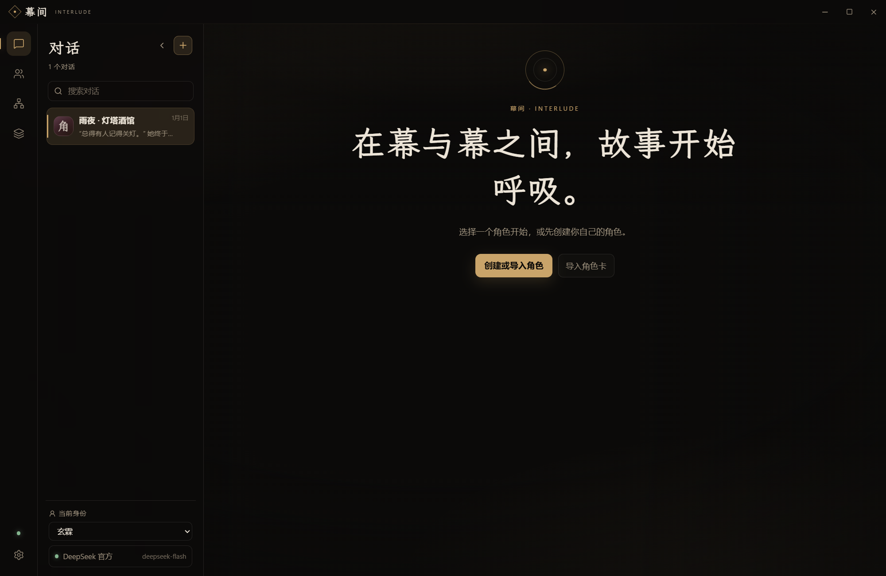

故事不在这里发生
幕间
一个跑在你自己电脑上的 AI 角色扮演客户端。对话只存在本地，不上传、不经过任何服务器。
角色会记得你说过的话、做过的事，也会记得自己手上还没办完的事。
- Windows 桌面应用
- 自带密钥，直连模型
- 数据全在本机

能做什么
三个真正会影响手感的部分长期记忆
每场对话自己攒记忆：你说过什么、发生过什么、角色心里怎么想。重要的部分在回复前自动带上，不需要你反复交代。
前因后果
角色的处境、承诺、未了的事都会被记下来。三章之前埋的伏笔，角色自己会想起来。
多路同时生成
同一个回复可以生成几个版本再挑一个。切走去看别的对话，这边照样在后台往下写。
每个对话单独设置
模型、思考强度、提示词都可以按对话区分。日常聊天和长线剧情不必共用一套参数。
下载
当前版本 0.1.0 · Windows 10 / 11 · 安装包约 129 MB